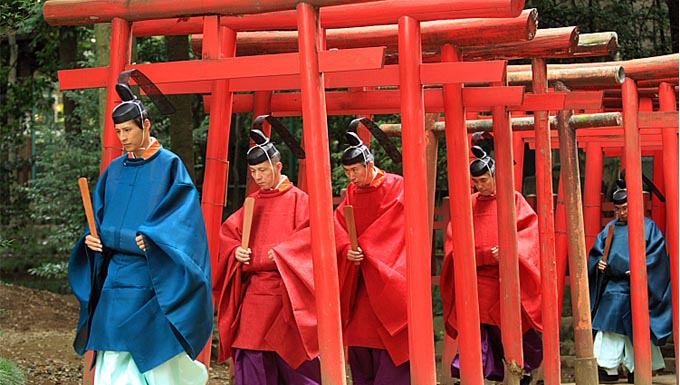

La religión en Japón no es un concepto definido, pues los japoneses no creen en una religión en particular. En cambio incorporan los rasgos de muchas religiones en sus vidas diarias en un proceso conocido como sincretismo. Las calles japonesas se decoran en Tanabata, Obon, Halloween y Navidad. Una oración reconocida cuando se tienen problemas es "Kami-sama dōka otasuke kudasai." ('Dios, ayudadme de alguna forma, por favor'), que parece implicar una creencia sincretista.
Muchas personas, sobre todo aquellas pertenecientes a generaciones jóvenes, sienten que las religiones en Japón son la parte de la cultura tradicional.
Según datos oficiales de 2011, el sintoísmo es la religión con mayor número de adeptos con alrededor de 101 000 000 personas, seguida por el budismo con alrededor de 84 700 000 y en tercer lugar se encuentra el cristianismo con 1 900 000. Sin embargo, muchas personas se declaran budistas y sintoístas, por lo que los números son difíciles de separar entre estas dos religiones.
